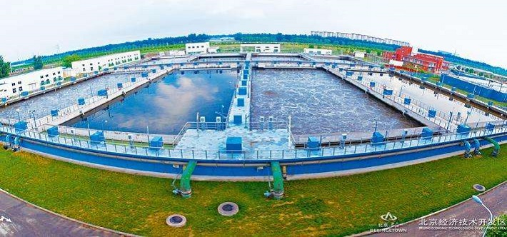
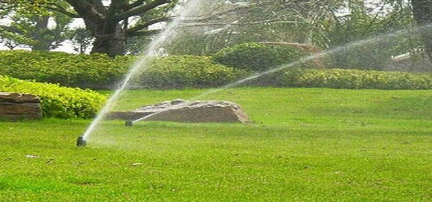
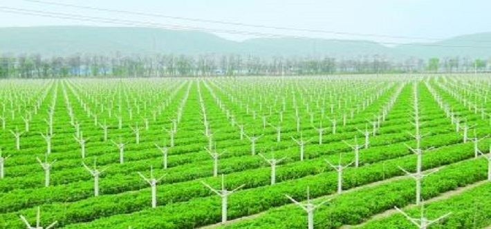

（一）加快淘汰落后高用水工艺、设备和产品。对现有企业达不到取水指标要求的落后产能，要进一步加大淘汰力度。组织编制落后的高用水工艺、设备和产品目录，加快淘汰高用水工艺、设备和产品步伐。组织研究工业节水器具、设备认证评价制度和实施方案，发布工业节水器具和设备目录，加快推进工业节水器具和设备认证评价工作，适时推进市场准入制度。
（二）大力推广节水工艺技术和设备。围绕工业节水重点，组织研究开发节水工艺技术和设备，大力推广《当前国家鼓励发展的节水设备（产品）》，重点推广工业用水重复利用、高效冷却、热力和工艺系统节水、洗涤节水、工业给水和废水处理、非常规水资源利用等通用节水技术和生产工艺。近期重点在钢铁、纺织、造纸和食品发酵等行业推进节水技术进步。
（三）钢铁行业：推广干法除尘、干熄焦、干式高炉炉顶余压发电（TRT）、清污分流、循环串级供水技术等，开发和推广高氨氮及高化学需氧量（COD）等废水处理及含油（泥）、高盐废水处理回用和酸洗液回收利用技术。
（四）纺织行业：推广喷水织机废水处理再循环利用系统、棉纤维素新制浆工艺节水技术、缫丝工业污水净化回用装置、洗毛污水“零”排放多循环处理设备、印染废水深度处理回用技术、逆流漂洗、冷轧堆染色、湿短蒸工艺、高温高压气流染色、针织平幅水洗，以及数码喷墨印花、转移印花、涂料印染等少用水工艺技术、自动调浆技术和设备等在线监控技术与装备。
（五）造纸行业：推广连续蒸煮、多段逆流洗涤、封闭式洗筛系统、氧脱木素、无元素氯或全无氯漂白、中高浓技术和过程智能化控制技术、制浆造纸水循环使用工艺系统、中段废水物化生化多级深度处理技术，以及高效沉淀过滤设备、多元盘过滤机、超效浅层气浮净水器等。
（六）食品与发酵行业：推广湿法制备淀粉工业取水闭环流程工艺、高浓糖化醪发酵（酒精、啤酒等）和高浓度母液（味精等）提取工艺，浓缩工艺普及双效以上蒸发器，推广应用余热型溴化锂吸收式冷水机组，开发应用发酵废母液、废糟液回用技术，以及新型螺旋板式换热器和工业型逆流玻璃钢冷却塔等新型高效冷却设备等。

（七）切实加强重点行业取水定额管理。严格执行取水定额国家标准，对钢铁、染整、造纸、啤酒、酒精、合成氨、味精和医药等行业，加大已发布取水定额国家标准实施监查力度，对不符合标准要求的企业，限期整改。加快完善取水定额标准体系建设，尽快出台氧化铝、乙烯和棉纺织等其他高用水行业的取水定额标准。强化高用水行业企业生产过程和工序用水管理，制定和实施钢铁行业焦化、烧结球团、炼铁、炼钢、热轧、冷轧等主要工序用水定额和节水标准。
（八）严格控制新上高用水工业项目。各地区尤其是水资源紧缺、供需矛盾突出的地区，要根据自身水资源条件，合理调整产业结构和工业布局，优化配置水资源。对钢铁、纺织、造纸等重点用水行业新建企业（项目），应达到《重点工业行业取水指导指标》规定的新建企业（项目）取水指标。
（九）积极推进企业水资源循环利用和工业废水处理回用。采用高效、安全、可靠的水处理技术工艺，大力提高水循环利用率，降低单位产品取水量。加强废水综合处理，实现废水资源化，减少水循环系统的废水排放量。加快培育节水和废水处理回用专业技术服务支撑体系。鼓励专业节水和废水处理回用服务公司联合设备供应商、融资方和用水企业，实施节水和废水处理回用技术改造项目。在造纸、钢铁等行业，逐步推广特许经营、委托营运等专业化模式，提高企业节水管理能力和废水资源化利用率；开展废水“零”排放示范企业创建活动，树立一批行业“零”排放示范典型。鼓励各级工业园区、经济技术开发区、高新技术开发区采取统一供水、废水集中治理模式，实施专业化运营，实现水资源梯级优化利用。
（十）组织开展节水型企业评价试点。加快制定实施重点行业节水型企业评价标准，建立节水型企业评价考核制度。依据《节水型企业评价导则》和《重点工业行业取水指导指标》，在钢铁、纺织、造纸等行业组织开展节水型企业评价试点工作。抓紧树立一批节水型企业示范典型，总结推广节水型企业的成功经验，通过配套鼓励政策、社会监督、舆论引导等措施，推动重点行业加快节水型企业建设。
（十一）夯实工业企业节水管理基础。强化工业用水源头监管，加快建立和实行工业节水设施“三同时”制度，推进工业企业节水设施与工业主体工程同时设计、同时施工、同时投入运行。严格执行《用水单位水计量器具配备和管理通则》强制性国家标准和《企业水平衡测试通则》、《企业用水统计通则》等相关国家标准，督促工业企业加快配备水计量器具，规范用水计量和统计工作。加快《工业企业用水管理导则》及重点行业工业废水处理回用等相关标准的编制和修订工作，进一步完善工业节水标准体系。鼓励和支持工业企业利用信息化技术提高节水管理水平，加快建设用水、节水管理信息系统，开展用水在线监测。
（十二）加强非常规水资源利用。加强海水、矿井水、雨水、再生水、微咸水等非常规水资源的开发利用。鼓励和支持沿海高用水企业配套建设海水淡化项目，以及直接利用海水替代冷却水。积极推进矿区开展矿井水资源化利用，鼓励钢铁等企业充分利用城市再生水。支持有条件的工业园区、企业开展雨水集蓄利用。
在我国，很多地区早已处于缺水状态。与水资源匮乏的现实相对应的是，我国城镇化迅速发展，人们对生态环境的要求日益提高，各类绿地面积不断增加，对水的需求量越来越大。面对这种矛盾，如何在保证绿化效果的同时做到水的节约呢？其实从绿化工程设计、施工到后期养护，每个阶段都有对应的有效办法。
“设计阶段：”
在做工程设计时，要贯彻乔、灌木为主，地被为辅的设计原则。乔、灌木，尤其是阔叶乔木，具有叶面积大、水土保持效果好，存活期需水量小的特点，除了种植初期需一定灌溉以保证成活外，每生长年度需水量很小，根系发达，对水的利用率很高；灌木宜采取群植形式（或色带形式），能有效覆盖地表，减少水分蒸腾。地被植物要以非草本宿根植物为主，作为主体植物——乔、灌木的补充，面积不宜过大；尽量减少冷季型草的使用，能节省大量的水资源。

“施工阶段：”
在整地时，最少要使绿地高程低于相邻路面（或便道沿）10厘米（考虑到较长时间风沙掩盖的影响，最好能保持15厘米至20厘米的高度差），以便在灌溉或自然降水时减少流失；种植时间以秋季为宜，此时气温偏低，植物生长缓慢，水的需求量和蒸腾量均小；气温高，湿度小的时候，要对绿化植物进行遮阴覆盖（尤其是大型植物），能有效减少植物本身的水分流失，节省水资源的投入；绿化植物在移植时应予以修剪，减少枝叶量，可降低种植后对水分的摄入。 养护阶段
这是节水的主要阶段，采取正确的措施可以大大降低水的消耗。
1.在合适的时间灌溉。
在早晨和傍晚灌溉，夏季可在晚间。这几个时段日照弱或无，气温较低，能有效减少灌溉过程中的蒸腾损失。
2.采取少量多次的灌溉方法。
绿化植物的根系除个别品种外，毛细根多集中在浅土层，短时间内灌溉量过大，很多水分都渗透到了土壤深处，无谓浪费，所以每次灌溉量不宜大，间隔一定时间重复进行，可保证植物充分吸收，总的灌溉量反而较少。
3.使用节水的灌溉设备和操作方法
首选使用微喷设备，包括地埋式和移动式，水雾状覆盖，可最大限度地达到节水目的，灌溉效果非常好。普通喷灌设备，也包括地埋和移动两种方式，关键是喷头的选择，要根据绿地边界选择喷洒直径合适的型号，且要控制单次灌溉量，提倡少量多次。水管灌溉，是目前使用最普遍的方式，也是问题最多的，应按以下要求改进。杜绝大水漫灌，这是浪费最大，效果最差的方式；条件允许的，应埋设主管道，多设出水口，减少水资源因长距离运输而产生的流失；选用口径小的末端水管，降低单位时间出水量；勤移动水管，减少水分向深层土壤的流失。
4.通过合理的修剪节水。
乔、灌木的直立枝、徒长枝、过密枝、萌蘖要及时清除，控制冠形，通过调整枝叶量避免水分不必要的浪费；地被类植物，尤其是草坪，修剪留茬高度不宜过低，保证透气性即可，以减少地表水分的蒸发，降低灌溉频率。
以上所述方法综合运用，会有效降低绿化工作的水资源使用量，达到节水的目的。当然，关键是每位绿化工作者都要树立节水的理念，并在工作中贯彻和实施。
在许多国家一立方水能生产2公斤粮食，而我国用同样的水产粮不足1公斤，其差别就是缘于农业节水技术落后，对于我们这样一个极度缺水的国度来说——发展农业节水技术是紧迫课题。
赤地千里，颗粒无收，干旱常常成为威胁我国农业生产的挥之不去的魔影。上世纪90年代以来，全国每年因旱受灾的耕地面积约4亿亩，占我国耕地面积的近1／4，正常年份全国灌区每年缺水300亿立方，相当于10多个大型水库的全部存水量。
我国是世界上水资源极度缺乏的国家之一，人均水资源的占有量不及世界人均水平的1／4，有人预测到2030年，人均水资源量将下降到1760立方，逼近国际上公认的1700立方的严重缺水警戒线！
在我国，农业又是用水大户，占全国用水量70％，在水资源极度缺乏的情况下，农业用水的效率又相当低，浪费严重。据统计，我国农业灌溉水的利用率只有不到50％，仅为发达国家的一半左右，一方水只能生产0.85千克粮食，远低于2千克以上的世界发达国家水平。这说明我国农业有着巨大的节水潜力。如果能把农业灌溉用水的利用率从目前的约50％提高到70％，则仅灌溉用水就可节水约900亿立方，是我国每年灌区缺水量的三倍。据有关部门预测，在灌溉用水量不增加的情况下，保障21世纪我国粮食安全的惟一选择就是大力发展节水农业。
农业节水技术是一个综合技术体系，是集合了农学、植物生理、土壤化学、微生物学、环境和气象、农业工程等多门学科的综合应用技术。发达国家在生产实践中，始终把提高灌溉水利用率、田间节水灌溉技术和作物水分生产效率作为重点，在水源开发利用技术、田间节水灌溉技术、农艺节水技术、用水管理技术和节水农业技术集成与产业化方面都有较大的突破。
农业节水技术主要有四个发展方面，包括工程技术、生物技术、农艺技术和管理技术， 而这四种技术的综合运用可以使节水达到事半功倍的效果。我们接触较多的灌渠防渗，发展微、喷灌就属于工程节水技术。但是目前，我国节水灌溉面积还不到有效灌溉面积的一半，渠道防渗和管道输水灌溉等方式仍占主导地位，喷灌和微灌等节水灌溉方式仅占灌溉面积的2.6％左右，与发达国家相比还有很大差距。生物节水技术，如通过基因工程培育新的抗旱品种在我国虽然发展迅速，但是由于受到整体生物技术发展水平的影响，水平不是很高。而农艺节水技术和管理节水技术在我国节水发展中受重视的程度还低，投入也不够。实践证明，坐水点种、旱育秧、种子包衣、施用抗旱保水剂等农艺节水措施，以及使用正确的灌溉方式建立良好的灌溉制度，产生的节水效果也是十分显著的。

相比之下，节水农业技术发达的国家，十分重视抗旱节水作物品种的培植，特别是近年来通过利用新的转基因技术、植物抗旱基因的挖掘和分离、基因聚合技术，培植出了一批小麦、棉花、牧草、水果和陆稻品种，使其不仅具有节水抗旱的突出特点，又具备稳定的形状和优良的品质特性。在节水农作制度关键技术研究方面，有的国家正在依据地域特性发展免耕，研究证明当耕作次数由7—10次减少到1次或不耕时，休闲地的蓄水量可以由102毫米增加到183毫米，蓄水量从占降水量的19％提高到40％，小麦单产从70公斤／亩提高到180公斤／亩。喷灌技术被广泛应用于蔬菜、果树、葡萄、经济作物、牧草、玉米和小麦。捷克、德国、罗马尼亚的喷灌面积已经接近其总灌溉面积，且自动化和机械化水平日益提高。新的激光控制平地技术用于完成土地精细平整工作。该技术从20世纪80年代在美国大面积推广，使灌溉匀度达到80％以上，田间灌水效率达到70％—80％。
那么，怎样发展我国的现代节水农业技术并尽快使之产业化呢？专家认为，我国在节水农业技术方面存在以下问题：节水农业高新技术研究相对薄弱，新技术储备少，尤其缺乏根据我国农业生产特点和区域特征而进行的基础研究及战略考虑。节水农业技术作为一项复杂的系统工程，需要水利、农艺、工程和管理技术的整体融合与合理配套。但现状往往是在各单项技术间缺乏有机的连接和集成，没有合适的应用模式。
另外，节水设备和材料的工艺落后，产品功能单一，仿制国外多，质量差，配套性差。技术的薄弱，产品研发制造能力不强，也没有形成体系，导致产业没有稳固的基础。
我国在农艺节水技术领域取得的很多成果在研发阶段表现出显著的节水增产增收效果，但在实际应用中，却由于缺乏相应的技术产品、配套的应用设施和规范化的技术产品标准，难以大面积推广。
专家认为，我国的节水农业产品市场需求巨大。今后10年，我国仅在节水灌溉设备市场一项，就需要管材2.25亿米、管件1500万件、出水口900万个。整个节水农业市场孕育着综合经济效益大约2000亿元以上的市场规模，同时还可以拉动相关产业的发展，增加约30万个就业机会。
据了解，国家已把“现代节水农业技术体系及新产品研究与开发”列入了“十五”重大科技专项。通过这一专项将向节水农业投资4.2亿元，建立辐射面积达100万亩的节水农业示范区，创制抗旱优异作物育种新材料50—55份，选育抗旱节水作物新品种15—20个左右，力争实现我国现代节水农业的前沿与关键技术的重大突破，提高节水农业关键设备和产品的性能和质量，提升节水农业的产业化能力和水平。